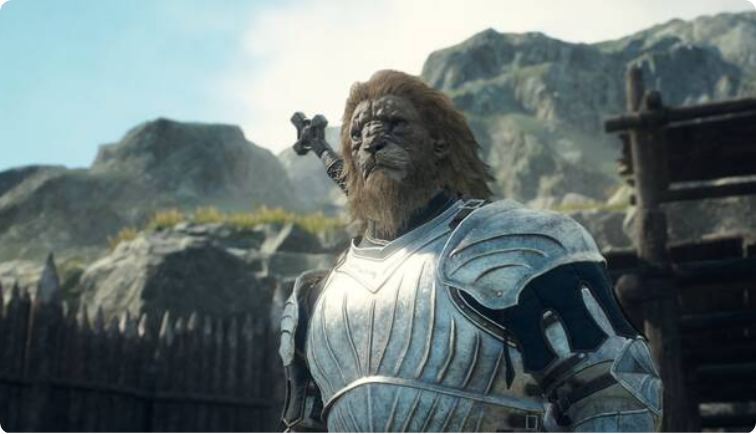
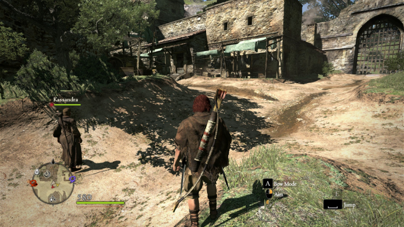
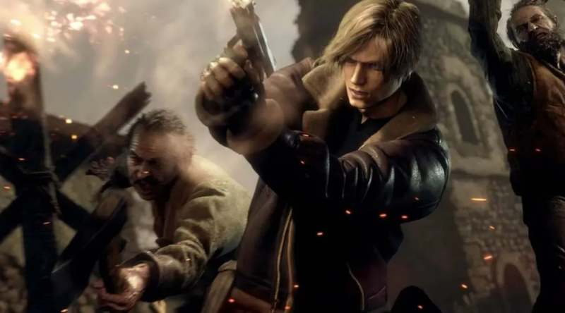

Dragon's Dogma 2 presenta su primer gameplay en PlayStation Showcase
"El equipo de desarrollo de Dragon's Dogma II, incluidos los veteranos Daigo Ikeno y Kenichi Suzuki, está trabajando arduamente para crear la secuela y están emocionados de compartir más detalles en el futuro".

Capcom ha presentado el primer tráiler con gameplay de Dragon's Dogma 2, su juego de rol y acción de mundo abierto. Sin embargo, no ha confirmado fecha, pero sí que llegará a PS5, Xbox Series y PC.
El primer Dragon's Dogma es un RPG que se lanzó en 2012 para PS3 y Xbox 360 y que no tuvo un gran éxito, pero que con el paso de los años muchos fueron descubriendo sus muchas virtudes y acabó convirtiendo en un título de culto, por lo que su secuela era bastante esperada. A lo largo de los años se ha ido reeditando en diferentes plataformas, y en estos momento se puede disfrutar también en PC, PS4, Xbox One y Nintendo Switch. Además la saga ha ido creciendo e incluso hay una serie de animación en Netflix.
"Itsuno y el equipo de desarrollo de Dragon's Dogma II, incluidos los veteranos de Dragon's Dogma Daigo Ikeno y Kenichi Suzuki, están trabajando arduamente para crear la secuela y están emocionados de compartir más detalles en el futuro", dijo Capcom hace un año sobre la secuela.
Fecha de lanzamiento
Uno de los datos más importantes es el de la fecha de lanzamiento del juego, pero por el momento Capcom no ha ofrecido ninguna información al respecto, así que desconocemos si llegará este mismo año o tocará esperar hasta 2024 o más adelante. Lo único que hemos podido ver hasta el momento es un tráiler con gameplay que se emitió en el PlayStation Showcase 2023.
Partiendo de esta base, dado que lo que se ha visto hasta ahora de la secuela es nada y menos, lo más normal es pensar que hasta el año que viene no saldrá a la venta, algo que sucederá en PS5, Xbox Series X/S y PC a través de Steam.
Aquí tienes el trailer al completo:
Argumento
Capcom ha ofrecido unas pequeñas pinceladas del argumento de esta nueva aventura de fantasía, sobre la que ha indicado que la historia comienza en una cárcel subterránea donde resuena la voz del Dragón. Entre los humanos y bestias nacerá un héroe que deberá cumplir con su destino, como será el de acabar con este poderoso Dragón y así reclamar el trono.
Esta imponente criatura está considerada como el símbolo de la destrucción del mundo, siendo capaz de elevarse por los cielos y arrasar con todo con sus alas y sus llamas con las que puede carbonizar todo a su paso. Para muchos es una auténtica pesadilla, aunque para otros es un dios al que hay que venerar.
En cuanto al protagonista, el Elegido, es al que controlaremos y cuyo corazón ha sido robado por el Dragón, de ahí que el destino de ambos esté ligado. A pesar de que haya perdido este órgano tan indispensable para vivir, estos héroes no mueren, pero tampoco siguen siendo humanos como tales, con unos poderes y habilidades extraordinarias.
Jugabilidad y modos de juego
Por lo que se ha visto en el primer tráiler de Dragon's Dogma 2 tiene pinta de que la jugabilidad será muy similar a la de su predecesor. Esto nos deja con un RPG de acción en el que los jugadores podrán sacar a relucir su lado creativo por el uso de los Peones, unos seres de otro mundo cuya misión consiste en servir a los Elegidos y con un comportamiento que es controlado por completo por la inteligencia artificial.
Una forma de no sentirnos solos en ningún momento y así de paso tener la oportunidad de configurar el grupo de héroes en base a nuestras preferencias. Los distintos Peones reaccionarán a nuestras acciones por si queremos optar por una actitud más ofensiva o por el contrario una más estratégica pudiendo atacar desde lejos y planeando mejor los movimientos.
Así hasta un máximo de tres compañeros que podremos llevar simultáneamente que podrán emplear espadas, arcos, magias, etc. Además, entre las novedades se ha revelado que habrá una nueva raza conocida como los Beastren, los cuales disponen de una apariencia similar a la de una bestia.
Imágenes

×
Noticias relacionadas

Resident Evil 4 Remake se actualiza para corregir uno de los mejores bugs para 'speedruns'